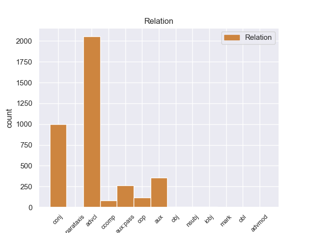
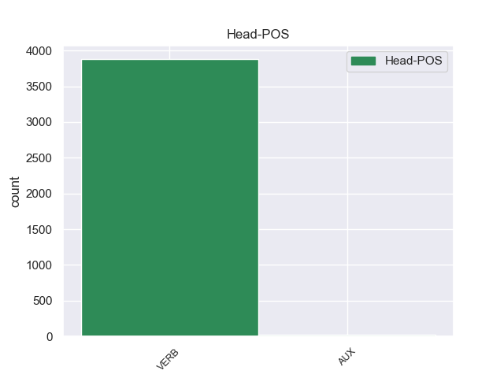
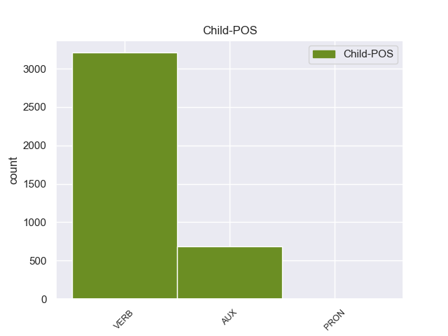

Distribution of features within this leaf



Agreement Rules sorted by frequency.
1 Una _ _ _ _ 0 _ _ _
2 vez _ _ _ _ 0 _ _ _
3 que _ _ _ _ 0 _ _ _
4 el _ _ _ _ 0 _ _ _
5 Hijo _ _ _ _ 0 _ _ _
6 de _ _ _ _ 0 _ _ _
7 Krypton _ _ _ _ 0 _ _ _
8 suelta suelta VERB _ Mood=Ind|Number=Sing|Person=3|Tense=Pres|VerbForm=Fin 0 _ _ _
9 el _ _ _ _ 0 _ _ _
10 misil _ _ _ _ 0 _ _ _
11 , _ _ _ _ 0 _ _ _
12 este _ _ _ _ 0 _ _ _
13 intenta intentar VERB _ Mood=Ind|Number=Sing|Person=3|Tense=Pres|VerbForm=Fin 8 aux _ _
14 huir _ _ _ _ 0 _ _ _
15 de _ _ _ _ 0 _ _ _
16 el _ _ _ _ 0 _ _ _
17 lugar _ _ _ _ 0 _ _ _
18 pero _ _ _ _ 0 _ _ _
19 es _ _ _ _ 0 _ _ _
20 atrapado _ _ _ _ 0 _ _ _
21 en _ _ _ _ 0 _ _ _
22 la _ _ _ _ 0 _ _ _
23 explosión _ _ _ _ 0 _ _ _
24 . _ _ _ _ 0 _ _ _
Disagree Examples:
1 El _ _ _ _ 0 _ _ _
2 año _ _ _ _ 0 _ _ _
3 siguiente _ _ _ _ 0 _ _ _
4 inicia _ _ _ _ 0 _ _ _
5 un _ _ _ _ 0 _ _ _
6 acercamiento _ _ _ _ 0 _ _ _
7 con _ _ _ _ 0 _ _ _
8 Alternativa _ _ _ _ 0 _ _ _
9 Ecologista _ _ _ _ 0 _ _ _
10 de _ _ _ _ 0 _ _ _
11 Catalunya _ _ _ _ 0 _ _ _
12 ( _ _ _ _ 0 _ _ _
13 sección _ _ _ _ 0 _ _ _
14 catalana _ _ _ _ 0 _ _ _
15 de _ _ _ _ 0 _ _ _
16 la _ _ _ _ 0 _ _ _
17 Confederación _ _ _ _ 0 _ _ _
18 de _ _ _ _ 0 _ _ _
19 Los _ _ _ _ 0 _ _ _
20 Verdes _ _ _ _ 0 _ _ _
21 ) _ _ _ _ 0 _ _ _
22 en _ _ _ _ 0 _ _ _
23 el _ _ _ _ 0 _ _ _
24 marco _ _ _ _ 0 _ _ _
25 de _ _ _ _ 0 _ _ _
26 la _ _ _ _ 0 _ _ _
27 convergencia _ _ _ _ 0 _ _ _
28 de _ _ _ _ 0 _ _ _
29 Los _ _ _ _ 0 _ _ _
30 Verdes _ _ _ _ 0 _ _ _
31 y _ _ _ _ 0 _ _ _
32 la _ _ _ _ 0 _ _ _
33 confederación _ _ _ _ 0 _ _ _
34 a _ _ _ _ 0 _ _ _
35 nivel _ _ _ _ 0 _ _ _
36 estatal _ _ _ _ 0 _ _ _
37 que _ _ _ _ 0 _ _ _
38 prácticamente _ _ _ _ 0 _ _ _
39 dura durar VERB _ Mood=Ind|Number=Sing|Person=3|Tense=Pres|VerbForm=Fin 0 _ _ _
40 hasta _ _ _ _ 0 _ _ _
41 que _ _ _ _ 0 _ _ _
42 ambas _ _ _ _ 0 _ _ _
43 se _ _ _ _ 0 _ _ _
44 integren integrar VERB _ Mood=Sub|Number=Plur|Person=3|Tense=Pres|VerbForm=Fin 39 advcl _ _
45 en _ _ _ _ 0 _ _ _
46 EV _ _ _ _ 0 _ _ _
47 - _ _ _ _ 0 _ _ _
48 CEC _ _ _ _ 0 _ _ _
49 . _ _ _ _ 0 _ _ _
1 Mientras _ _ _ _ 0 _ _ _
2 que _ _ _ _ 0 _ _ _
3 en _ _ _ _ 0 _ _ _
4 otros _ _ _ _ 0 _ _ _
5 países _ _ _ _ 0 _ _ _
6 se _ _ _ _ 0 _ _ _
7 seguía _ _ _ _ 0 _ _ _
8 separando _ _ _ _ 0 _ _ _
9 la _ _ _ _ 0 _ _ _
10 profesión _ _ _ _ 0 _ _ _
11 de _ _ _ _ 0 _ _ _
12 uno _ _ _ _ 0 _ _ _
13 y _ _ _ _ 0 _ _ _
14 otro _ _ _ _ 0 _ _ _
15 , _ _ _ _ 0 _ _ _
16 ejemplo _ _ _ _ 0 _ _ _
17 de _ _ _ _ 0 _ _ _
18 Italia _ _ _ _ 0 _ _ _
19 con _ _ _ _ 0 _ _ _
20 el _ _ _ _ 0 _ _ _
21 Ingegnere _ _ _ _ 0 _ _ _
22 Civile _ _ _ _ 0 _ _ _
23 - _ _ _ _ 0 _ _ _
24 Edile _ _ _ _ 0 _ _ _
25 ( _ _ _ _ 0 _ _ _
26 Ingeniero _ _ _ _ 0 _ _ _
27 Civil _ _ _ _ 0 _ _ _
28 o _ _ _ _ 0 _ _ _
29 de _ _ _ _ 0 _ _ _
30 la _ _ _ _ 0 _ _ _
31 Construcción _ _ _ _ 0 _ _ _
32 en _ _ _ _ 0 _ _ _
33 otros _ _ _ _ 0 _ _ _
34 países _ _ _ _ 0 _ _ _
35 ) _ _ _ _ 0 _ _ _
36 y _ _ _ _ 0 _ _ _
37 el _ _ _ _ 0 _ _ _
38 Architetto _ _ _ _ 0 _ _ _
39 , _ _ _ _ 0 _ _ _
40 en _ _ _ _ 0 _ _ _
41 España _ _ _ _ 0 _ _ _
42 , _ _ _ _ 0 _ _ _
43 la _ _ _ _ 0 _ _ _
44 implantación _ _ _ _ 0 _ _ _
45 de _ _ _ _ 0 _ _ _
46 el _ _ _ _ 0 _ _ _
47 título _ _ _ _ 0 _ _ _
48 de _ _ _ _ 0 _ _ _
49 Aparejador _ _ _ _ 0 _ _ _
50 supone suponer VERB _ Mood=Ind|Number=Sing|Person=3|Tense=Pres|VerbForm=Fin 0 _ _ _
51 que _ _ _ _ 0 _ _ _
52 el _ _ _ _ 0 _ _ _
53 Arquitecto _ _ _ _ 0 _ _ _
54 pase pasar VERB _ Mood=Sub|Number=Sing|Person=3|Tense=Pres|VerbForm=Fin 50 ccomp _ _
55 a _ _ _ _ 0 _ _ _
56 tener _ _ _ _ 0 _ _ _
57 atribuciones _ _ _ _ 0 _ _ _
58 en _ _ _ _ 0 _ _ _
59 el _ _ _ _ 0 _ _ _
60 proyecto _ _ _ _ 0 _ _ _
61 arquitectónico _ _ _ _ 0 _ _ _
62 , _ _ _ _ 0 _ _ _
63 lo _ _ _ _ 0 _ _ _
64 que _ _ _ _ 0 _ _ _
65 se _ _ _ _ 0 _ _ _
66 llama _ _ _ _ 0 _ _ _
67 el _ _ _ _ 0 _ _ _
68 proyecto _ _ _ _ 0 _ _ _
69 básico _ _ _ _ 0 _ _ _
70 propio _ _ _ _ 0 _ _ _
71 de _ _ _ _ 0 _ _ _
72 la _ _ _ _ 0 _ _ _
73 profesión _ _ _ _ 0 _ _ _
74 de _ _ _ _ 0 _ _ _
75 Arquitecto _ _ _ _ 0 _ _ _
76 , _ _ _ _ 0 _ _ _
77 y _ _ _ _ 0 _ _ _
78 además _ _ _ _ 0 _ _ _
79 pase _ _ _ _ 0 _ _ _
80 a _ _ _ _ 0 _ _ _
81 tener _ _ _ _ 0 _ _ _
82 las _ _ _ _ 0 _ _ _
83 atribuciones _ _ _ _ 0 _ _ _
84 en _ _ _ _ 0 _ _ _
85 el _ _ _ _ 0 _ _ _
86 proyecto _ _ _ _ 0 _ _ _
87 de _ _ _ _ 0 _ _ _
88 ejecución _ _ _ _ 0 _ _ _
89 , _ _ _ _ 0 _ _ _
90 asimilables _ _ _ _ 0 _ _ _
91 a _ _ _ _ 0 _ _ _
92 la _ _ _ _ 0 _ _ _
93 profesión _ _ _ _ 0 _ _ _
94 de _ _ _ _ 0 _ _ _
95 Ingeniero _ _ _ _ 0 _ _ _
96 de _ _ _ _ 0 _ _ _
97 la _ _ _ _ 0 _ _ _
98 Edificación _ _ _ _ 0 _ _ _
99 o _ _ _ _ 0 _ _ _
100 Maestro _ _ _ _ 0 _ _ _
101 de _ _ _ _ 0 _ _ _
102 Obras _ _ _ _ 0 _ _ _
103 . _ _ _ _ 0 _ _ _
1 Al _ _ _ _ 0 _ _ _
2 margen _ _ _ _ 0 _ _ _
3 de _ _ _ _ 0 _ _ _
4 esta _ _ _ _ 0 _ _ _
5 comparativa _ _ _ _ 0 _ _ _
6 que _ _ _ _ 0 _ _ _
7 podría poder AUX _ Mood=Cnd|Number=Sing|Person=3|VerbForm=Fin 8 aux _ _
8 resultar resultar VERB _ Mood=Ind|Number=Sing|Person=3|Tense=Pres|VerbForm=Fin 0 _ _ _
9 graciosa _ _ _ _ 0 _ _ _
10 , _ _ _ _ 0 _ _ _
11 cabe _ _ _ _ 0 _ _ _
12 destacar _ _ _ _ 0 _ _ _
13 que _ _ _ _ 0 _ _ _
14 los _ _ _ _ 0 _ _ _
15 propietarios _ _ _ _ 0 _ _ _
16 de _ _ _ _ 0 _ _ _
17 estos _ _ _ _ 0 _ _ _
18 apartamentos _ _ _ _ 0 _ _ _
19 destacan _ _ _ _ 0 _ _ _
20 por _ _ _ _ 0 _ _ _
21 su _ _ _ _ 0 _ _ _
22 escasa _ _ _ _ 0 _ _ _
23 amabilidad _ _ _ _ 0 _ _ _
24 . _ _ _ _ 0 _ _ _
1 ¿ _ _ _ _ 0 _ _ _
2 Te _ _ _ _ 0 _ _ _
3 pudieras pudieer VERB _ Mood=Cnd|Number=Sing|Person=3|VerbForm=Fin 4 aux _ _
4 imaginar imaginar VERB _ Mood=Ind|Number=Sing|Person=3|Tense=Pres|VerbForm=Fin 0 _ _ _
5 que _ _ _ _ 0 _ _ _
6 a _ _ _ _ 0 _ _ _
7 tu _ _ _ _ 0 _ _ _
8 casa _ _ _ _ 0 _ _ _
9 le _ _ _ _ 0 _ _ _
10 corten _ _ _ _ 0 _ _ _
11 la _ _ _ _ 0 _ _ _
12 luz _ _ _ _ 0 _ _ _
13 , _ _ _ _ 0 _ _ _
14 el _ _ _ _ 0 _ _ _
15 agua _ _ _ _ 0 _ _ _
16 , _ _ _ _ 0 _ _ _
17 el _ _ _ _ 0 _ _ _
18 teléfono _ _ _ _ 0 _ _ _
19 y _ _ _ _ 0 _ _ _
20 te _ _ _ _ 0 _ _ _
21 la _ _ _ _ 0 _ _ _
22 rodeen _ _ _ _ 0 _ _ _
23 de _ _ _ _ 0 _ _ _
24 policias _ _ _ _ 0 _ _ _
25 para _ _ _ _ 0 _ _ _
26 que _ _ _ _ 0 _ _ _
27 nadie _ _ _ _ 0 _ _ _
28 salga _ _ _ _ 0 _ _ _
29 o _ _ _ _ 0 _ _ _
30 entre _ _ _ _ 0 _ _ _
31 ? _ _ _ _ 0 _ _ _
1 Que _ _ _ _ 0 _ _ _
2 Franco _ _ _ _ 0 _ _ _
3 no _ _ _ _ 0 _ _ _
4 le _ _ _ _ 0 _ _ _
5 hubiera hubier AUX _ Mood=Cnd|Number=Sing|Person=3|VerbForm=Fin 6 aux _ _
6 escuchado escuchado VERB _ Mood=Ind|Number=Sing|Person=3|Tense=Pres|VerbForm=Fin 0 _ _ _
7 y _ _ _ _ 0 _ _ _
8 que _ _ _ _ 0 _ _ _
9 hubiese _ _ _ _ 0 _ _ _
10 puesto _ _ _ _ 0 _ _ _
11 en _ _ _ _ 0 _ _ _
12 peligro _ _ _ _ 0 _ _ _
13 su _ _ _ _ 0 _ _ _
14 corona _ _ _ _ 0 _ _ _
15 , _ _ _ _ 0 _ _ _
16 no _ _ _ _ 0 _ _ _
17 es _ _ _ _ 0 _ _ _
18 verdad _ _ _ _ 0 _ _ _
19 , _ _ _ _ 0 _ _ _
20 nunca _ _ _ _ 0 _ _ _
21 dijo _ _ _ _ 0 _ _ _
22 una _ _ _ _ 0 _ _ _
23 palabra _ _ _ _ 0 _ _ _
24 contra _ _ _ _ 0 _ _ _
25 la _ _ _ _ 0 _ _ _
26 represión _ _ _ _ 0 _ _ _
27 y _ _ _ _ 0 _ _ _
28 años _ _ _ _ 0 _ _ _
29 mas _ _ _ _ 0 _ _ _
30 tarde _ _ _ _ 0 _ _ _
31 , _ _ _ _ 0 _ _ _
32 cuando _ _ _ _ 0 _ _ _
33 temió _ _ _ _ 0 _ _ _
34 que _ _ _ _ 0 _ _ _
35 su _ _ _ _ 0 _ _ _
36 trono _ _ _ _ 0 _ _ _
37 vacilase _ _ _ _ 0 _ _ _
38 organizo _ _ _ _ 0 _ _ _
39 el _ _ _ _ 0 _ _ _
40 23 _ _ _ _ 0 _ _ _
41 F _ _ _ _ 0 _ _ _
42 y _ _ _ _ 0 _ _ _
43 se _ _ _ _ 0 _ _ _
44 presento _ _ _ _ 0 _ _ _
45 como _ _ _ _ 0 _ _ _
46 el _ _ _ _ 0 _ _ _
47 salvador _ _ _ _ 0 _ _ _
48 de _ _ _ _ 0 _ _ _
49 la _ _ _ _ 0 _ _ _
50 patria _ _ _ _ 0 _ _ _
51 contando _ _ _ _ 0 _ _ _
52 así _ _ _ _ 0 _ _ _
53 atraer _ _ _ _ 0 _ _ _
54 se _ _ _ _ 0 _ _ _
55 la _ _ _ _ 0 _ _ _
56 simpatía _ _ _ _ 0 _ _ _
57 de _ _ _ _ 0 _ _ _
58 la _ _ _ _ 0 _ _ _
59 gente _ _ _ _ 0 _ _ _
60 que _ _ _ _ 0 _ _ _
61 temía _ _ _ _ 0 _ _ _
62 a _ _ _ _ 0 _ _ _
63 los _ _ _ _ 0 _ _ _
64 salvajes _ _ _ _ 0 _ _ _
65 fascistas _ _ _ _ 0 _ _ _
66 . _ _ _ _ 0 _ _ _